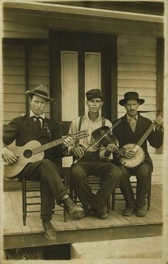
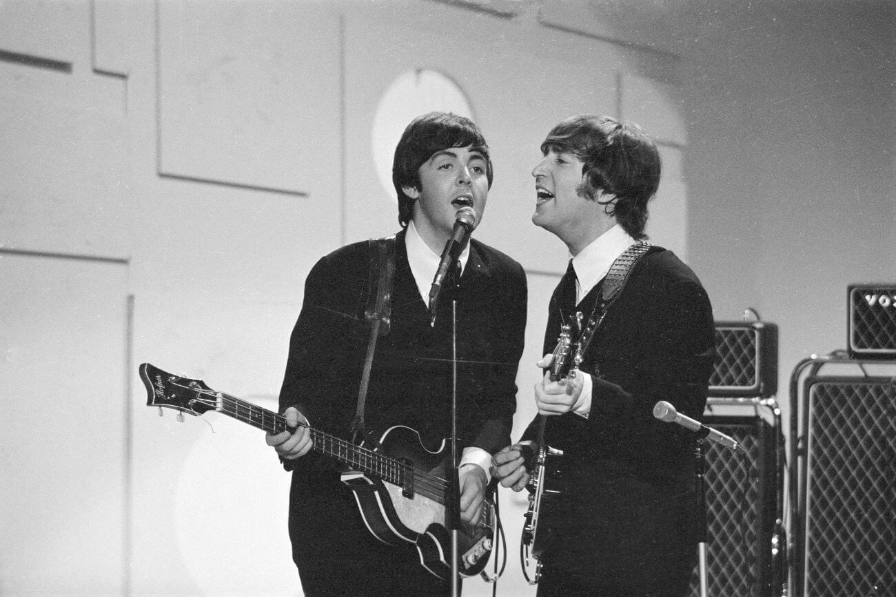

Origins of Folk
Folk is a traditional genre developed in the early 1900s, and made popular in the 60s. It is a relatively simplistic genre, consisting of vocals and guitar, sometimes harmonica, and even fiddle and upright bass for playing certain traditionals. For this website, I will mainly be talking about folk's widespread use accumulating in and around the 60s.

My interest
Growing up my mom liked to listen to Simon & Garfunkel, The Beatles and other singer songwriter musicians. I still enjoy those groups a lot, and they were very intertwined with the musicians I'll be talking about today.
I was very inspired in my own playing and it motivates me to continue creating. I also love researching a lot about my favorite artists, so I was very excited for this project. I hope you can learn a little about this lovely genre of music.

Connections
An interesting note is all the connections that occur between different genres. For example, from an instrumental perspective, folk and slack key are surprisingly similar. The chord progressions almost always involve the the same IV and dominant V chord, and the choruses are nearly identical.
Both are very storytelling genres. For folk, think old-timey farm stories, and in slack key they often talk more about places and nature. Rythimcally, there is still some similarity, but the main similarity is in the guitar. Each use an alternating bass picking pattern which is distict from the main vocal line. This creates the illusion that there are multiple guitars, when in reality it is one person who has trained their independance enough to play two different parts simultaneously that come together beatifully.
Likely the largest difference is then the vocality. Nearly all Ki Hoalu songs have flowy falsetto sections, while folk is a lot more steady (it should be mentioned there are plenty of folk yodelling songs!).